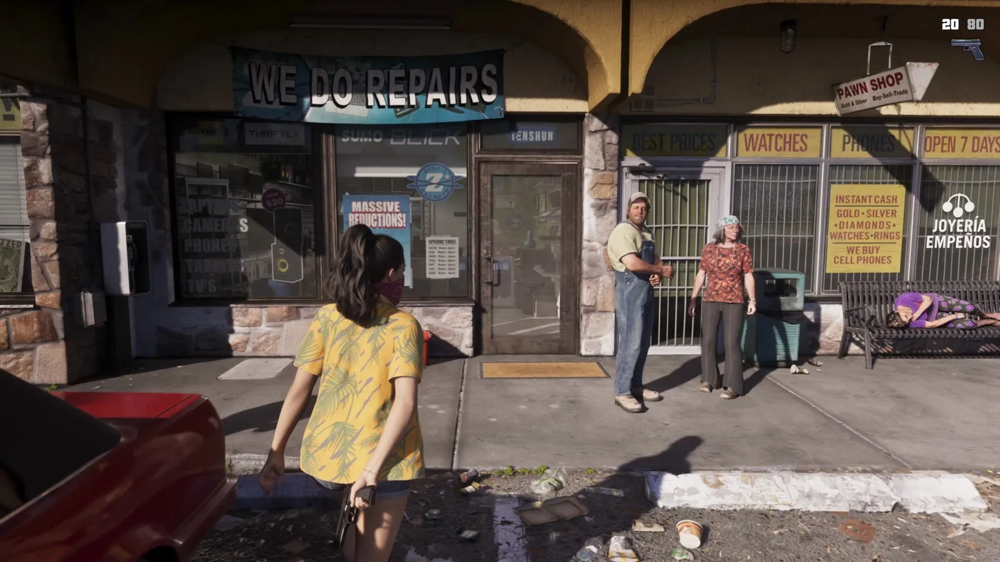
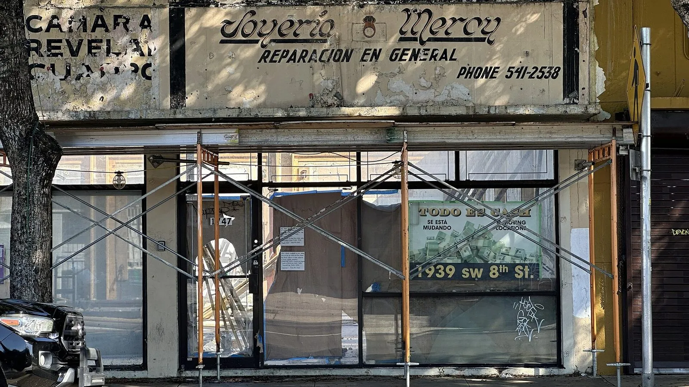
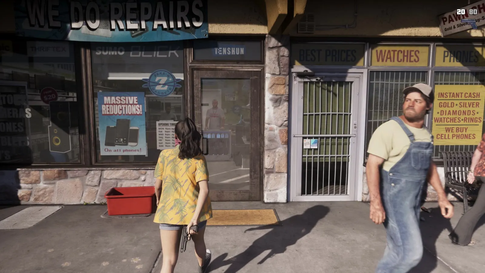
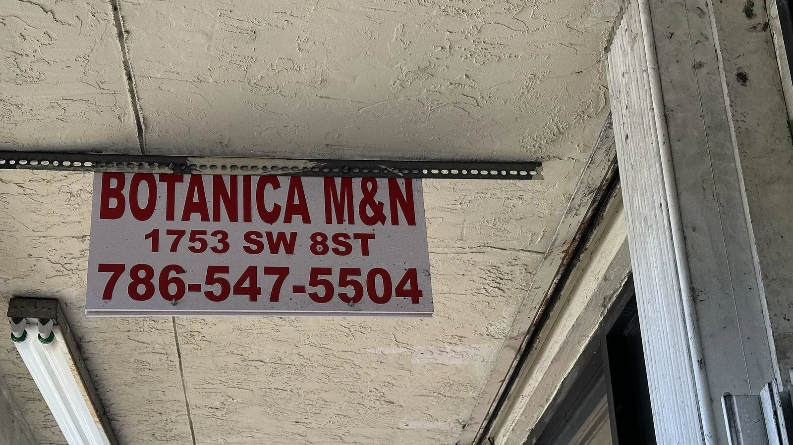

Вывеска «Joyería» в GTA 6 и испанский язык Майами
Опубликовано:
Двуязычные вывески — обычная часть Майами, и Rockstar показывает их как есть. Сам магазин вымышленный, но надписи на английском и испанском рядом — прямо из жизни.


- В «Расширенном показе» GTA 6 на торговом ряду висят вывески PAWN SHOP и «Joyería Empeños».
- Joyería по-испански — «ювелирный магазин», empeños — «залоги»: это ломбард.
- Над соседней дверью — WE DO REPAIRS, «делаем ремонт».
- По данным Бюро переписи США, в округе Майами-Дейд 70,6% жителей — латиноамериканцы.
- Три из четырёх жителей округа (75,3%) говорят дома не по-английски.
Что в игре
Около 17:56 «Расширенного показа» девушка в жёлтой рубашке с банданой на лице идёт к торговому ряду. Над витринами — WE DO REPAIRS, табличка PAWN SHOP, наклейки BEST PRICES · WATCHES · PHONES · OPEN 7 DAYS, на стекле — INSTANT CASH · GOLD · SILVER · DIAMONDS · WATCHES · RINGS · WE BUY CELL PHONES.
А справа на витрине — надпись на испанском: JOYERÍA EMPEÑOS. Joyería — «ювелирный магазин», empeños — «залоги», то есть ломбард. Одно и то же заведение подписано на двух языках: PAWN SHOP для тех, кто говорит по-английски, «Empeños» — для тех, кто по-испански.

Что в реальности
Майами — один из самых испаноязычных крупных городов США. По данным Бюро переписи США (QuickFacts), в округе Майами-Дейд живут 2 802 029 человек (оценка на 1 июля 2025 года). Из них 70,6% — латиноамериканцы, 54,5% родились за пределами США, а 75,3% жителей старше пяти лет говорят дома не по-английски (данные 2020–2024 годов).
Поэтому испанские вывески здесь — не экзотика, а обычная улица. На фото — старая расписанная вывеска на Калье-Очо (SW 8th Street) в Маленькой Гаване, которую открыли во время ремонта фасада: «Joyería Mercy — Reparación en general» — «ювелирный, ремонт любой». Ниже на стекле — «Todo es cash». Ювелирный, ремонт и наличные — тот же набор, что на ряду из GTA 6.

В игре над соседней дверью — WE DO REPAIRS («делаем ремонт»), а на настоящей вывеске с Калье-Очо — «Reparación en general». Одна и та же услуга, только на двух языках.
Совпадает и отличается
| Майами | GTA 6 | |
|---|---|---|
| Вывески на английском и испанском рядом | Обычная картина: 75,3% жителей говорят дома не по-английски | 🟢 PAWN SHOP и «Joyería Empeños» на одном ряду |
| Ювелирный + ремонт + наличные | «Joyería Mercy — Reparación en general», «Todo es cash» | 🟢 WE DO REPAIRS, INSTANT CASH, GOLD · SILVER · DIAMONDS |
| Конкретный магазин | Joyería Mercy, 1939 SW 8th St | 🔵 Вымышленный, адрес в игре неизвестен |
Источники: Rockstar Games — «Grand Theft Auto VI: An Extended Look» (17:56–17:58); U.S. Census Bureau — QuickFacts, Miami-Dade County, Florida; Wikimedia Commons — фото Phillip Pessar (CC BY 4.0, CC BY 2.0).
Реальные фото: Фото: Phillip Pessar, CC BY 2.0 · Wikimedia Commons; Фото: Phillip Pessar, CC BY 4.0 · Wikimedia Commons. Кадры игры: Rockstar Games.
Каждый день — одно сравнение: кадр игры рядом с реальным фото. Подписывайтесь:
YouTubeInstagramTikTok
 vs
vs
 vs
vs
 vs
vs